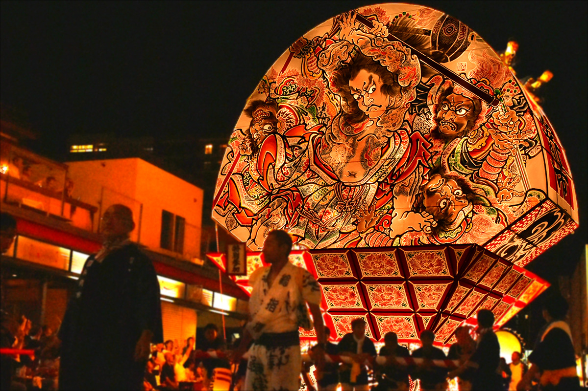
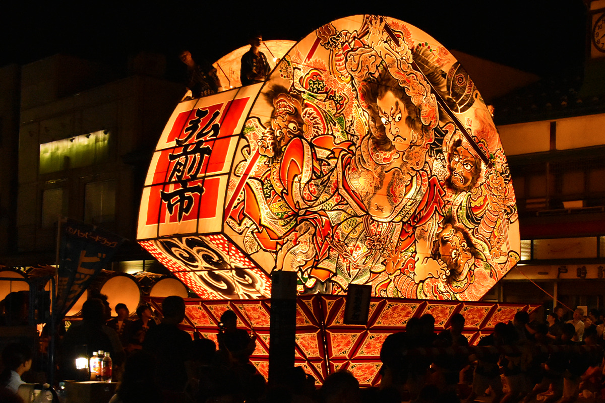
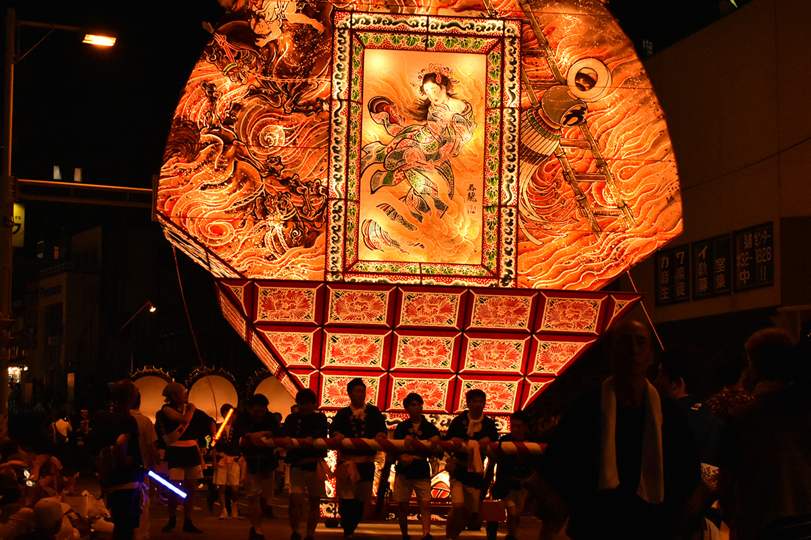
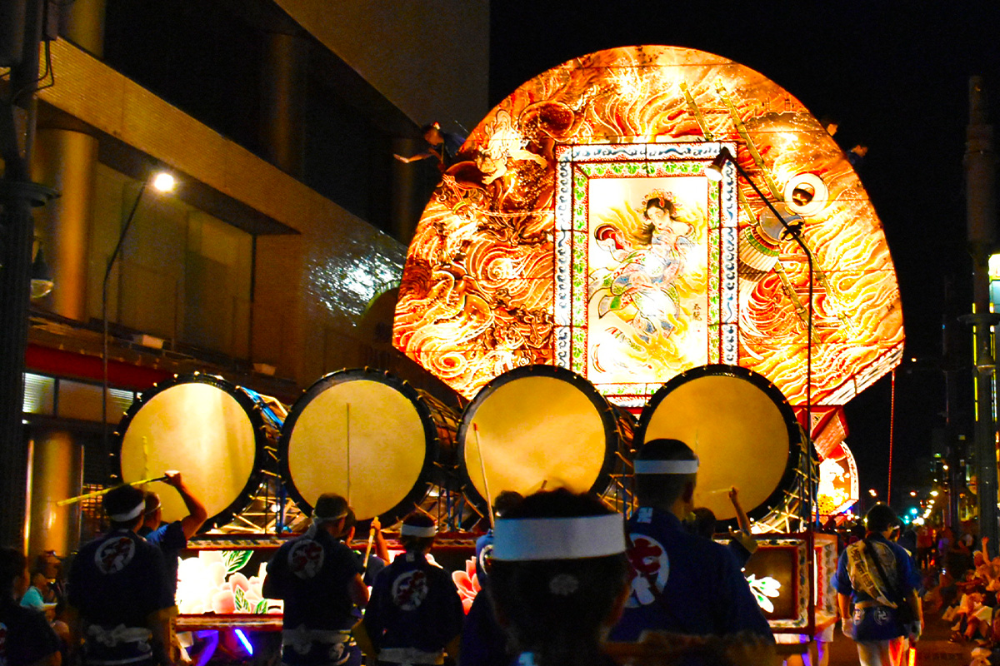
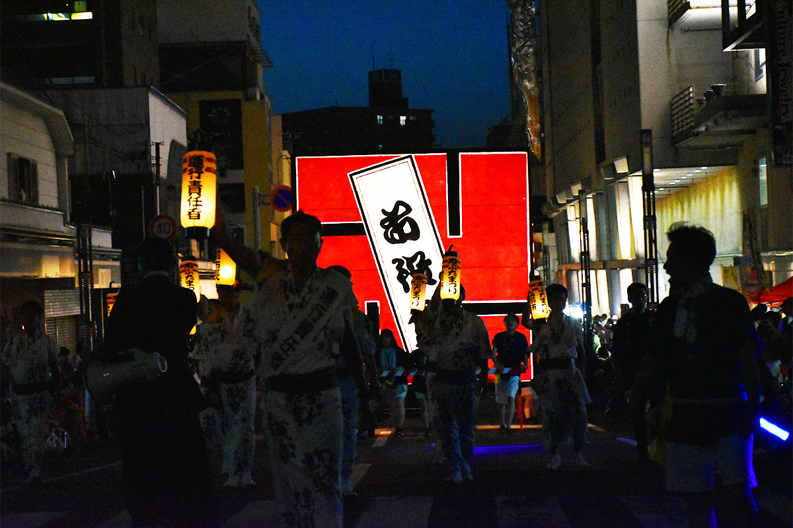
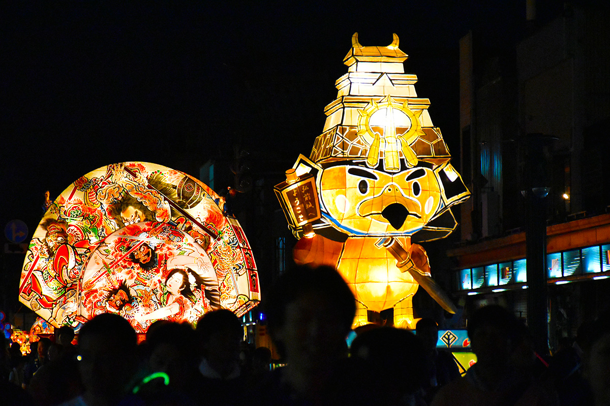
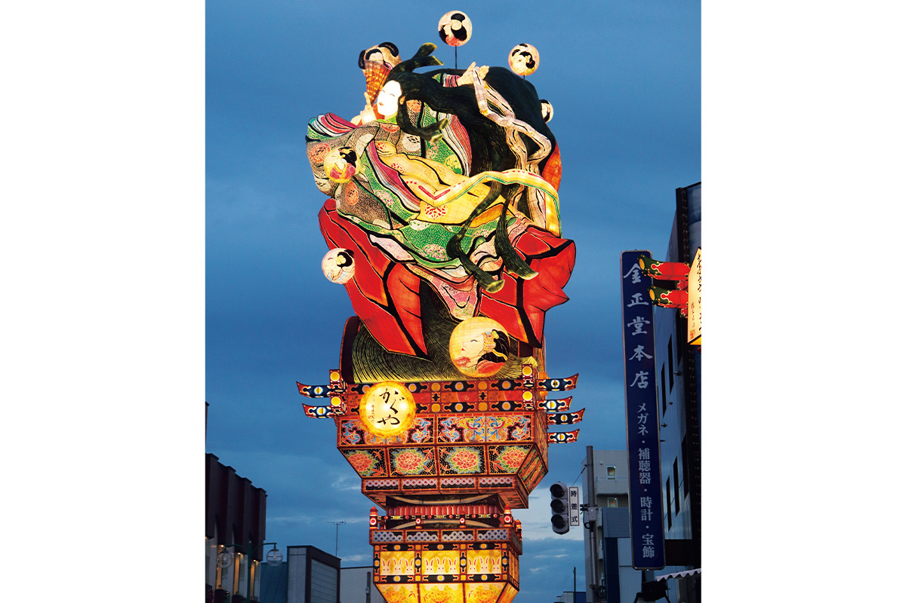
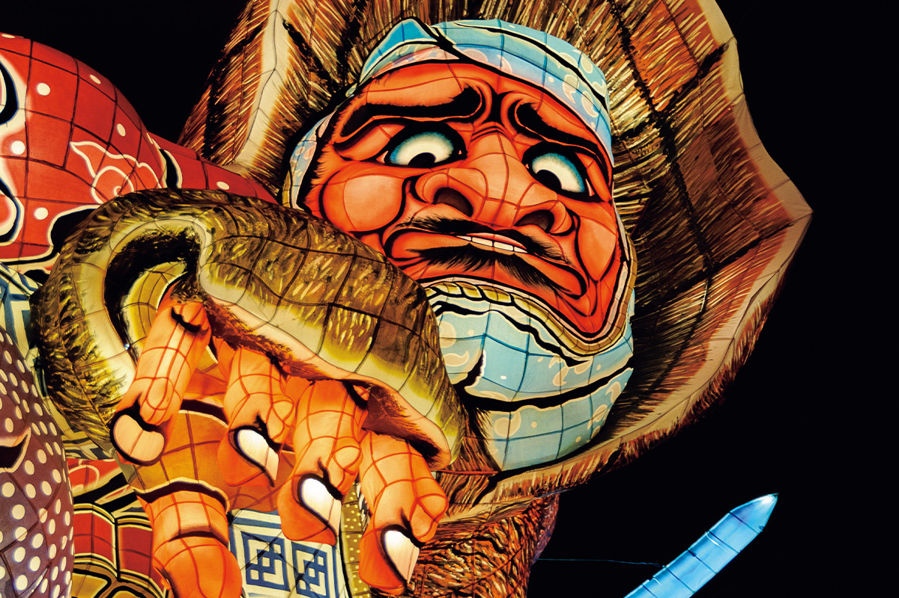
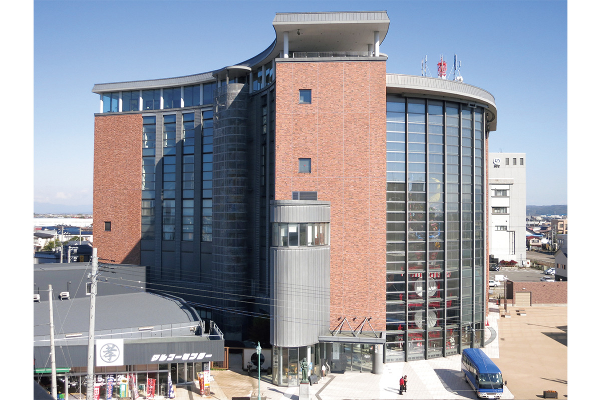

Префектура Аомори · Хиросаки и Госёгавара · фестивали
Нэпута Цугару: веерные фонари Хиросаки и двадцатиметровые великаны Госёгавары

В начале августа в Цугару, на западе префектуры Аомори, по ночным улицам везут огромные светящиеся фонари. В Хиросаки они похожи на расписные веера, в Госёгаваре поднимаются выше окрестных зданий.
Имя
Нэбута или нэпута
Три фестиваля называют главными летними праздниками Тохоку: Танабата в Сэндае, Канто в Аките и Нэбута в Аомори. В названии последнего многие путаются: как правильно, «нэбута» или «нэпута»? Правильно и так, и так. В городе Аомори проходит фестиваль нэбута, в Хиросаки фестиваль нэпута. Оба очень старые, и оба задуманы, чтобы отогнать беду. О фестивале в Аомори рассказывает отдельная статья.
Главное различие в форме фонарей, которые везут по улицам. В Аомори это объёмные фигуры, сцены в духе самых бурных эпизодов кабуки, вылепленные в трёх измерениях. В Хиросаки фонарь в основном плоский, в форме веера, а картина на нём нарисована. Но и плоские воины смотрят так, будто вот-вот спрыгнут на мостовую.


Спереди на веере рисуют воинов и героев, сзади красавиц или картины тушью, и покой с движением оказываются двумя сторонами одного фонаря. Версий происхождения у фестиваля несколько. По одной из них, он вырос из крестьянского обряда «нэмури нагаси», «сплавления сна»: летом, в разгар полевых работ, люди прогоняли сонливость и лень, мешавшие делу. Из «нэмута нагаси» слово будто бы превратилось в «нэмута», а потом в «нэпута». В 2022 году фестивалю в Хиросаки исполнилось 300 лет.
Шествие
Упрямый барабан и «Я-ядо!»
В Цугару есть словечко «дзёппари»: так на местном диалекте называют упрямство, нежелание уступать. Барабаны «Цугару дзёппари о-дайко» в обычном размере достигают 3,3 метра в диаметре и 3,6 метра в длину. На фестиваль в Хиросаки выкатывают барабан ещё больше, диаметром 4 метра и длиной 4,5 метра, и к его имени прибавляют иероглиф «го», «крепкий»: «Цугару годзёппари о-дайко». По размеру видно, как Хиросаки хочет быть первым во всём.

За большим барабаном под крики «Я-ядо!» трогаются нэпута. Впереди идут маленькие фонари, за ними большие, поэтому издалека кажется, что веера заходят друг на друга. За каждым фонарём следуют музыканты с флейтами и барабанами, и от этой музыки толпа понемногу заводится.
Самые большие нэпута выше 9 метров и весят несколько тонн. Фонарь поворачивается к публике, словно актёр кабуки, застывший в эффектной позе, и при этом обходит провода и вывески. Всё держится на силе и сноровке тех, кто тянет и толкает повозку: мокрые от пота, они ведут её, ни разу не остановив.

Среди фонарей встречаются нэпута в форме золотых рыбок. Они напоминают о том, что в Цугару в эпоху княжества много разводили золотых рыбок, и публика их очень любит. Всего по ночным улицам идут больше 80 больших и малых нэпута, а зрителей из Японии и других стран, по данным 2022 года, собирается больше 1,6 млн. Раньше после фестиваля нэпута разбирали и пускали по рекам и в море. К 2022 году от этого отказались: фонари по-прежнему разбирают, но ради природы в воду не бросают.

Фестиваль нэпута в Хиросаки
- Даты
- ежегодно 1–7 августа (в 2026 году с 1 по 7 августа)
- Адрес
- префектура Аомори, Хиросаки; 1–4 и 7 августа улица Дотэмати, 5 и 6 августа район у станции Хиросаки
- Телефон
- +81 172-37-5501
Госёгавара
Нэпута, которые стоят

Летом фестивали нэбута проходят по всей префектуре Аомори. Рядом с фестивалями в Аомори и Хиросаки чаще всего называют тати-нэпута в Госёгаваре, ещё одном городе Цугару.
Госёгавара была городом богатых купцов. Купцы и крупные землевладельцы здесь будто соревновались, у кого праздничная повозка выше, и тати-нэпута продолжает эту традицию. Название значит «стоящие нэпута», и главное в них рост: около 23 метров в высоту при весе около 19 тонн. Когда такая фигура светится в ночном небе, от неё трудно отвести взгляд, настолько она огромна. В дни фестиваля по улицам идут три больших тати-нэпута, а с ними нэпута самых разных размеров от кварталов города, старших школ и компаний. Шествие подгоняют свой местный клич «Яттэмарэ, яттэмарэ!» и громкая музыка нэпута.
Большие тати-нэпута время от времени делают заново, и в каждую вложены мастерство художников-нэпута и увлечённость всех, кто её строит.

История
Как великаны вернулись
Нэпута в Госёгаваре начали расти в поздний период эпохи Эдо. К концу эпохи Мэйдзи, в начале XX века, здесь строили фигуры даже выше нынешних, но, когда город опутали электрические провода, нэпута пришлось уменьшить. В эпоху Хэйсэй, после 1989 года, начался проект по их возрождению: провода убрали под землю, провели большие работы, и великаны вернулись на улицы. С тех пор делали тати-нэпута и по мотивам «Жемчуга дракона» и «Гандама», и такие фигуры собирают поклонников и в Японии, и за её пределами.
Музей
Тати-нэпута круглый год

Три больших тати-нэпута в остальное время года стоят в большом культурном центре «Тати-нэпута но яката». Здесь их можно рассмотреть совсем вблизи и попробовать сделать самому фонарик в виде золотой рыбки или веер-утива. С апреля 2025 года по июль 2026 года музей был закрыт на большую реконструкцию. В дни фестиваля стена здания раскрывается, и тати-нэпута выходят на улицу: этот момент лучше всего ловить с камерой. В смотровом лаундже на верхнем этаже можно попробовать местную еду, например рамэн с ракушками сидзими.
Тати-нэпута в Госёгаваре
- Даты
- ежегодно в начале августа (в 2026 году с 4 по 8 августа)
- Адрес
- префектура Аомори, Госёгавара, центр города (вокруг музея «Тати-нэпута но яката»)
- Как добраться
- около 3 минут пешком от станции JR Госёгавара; на машине около 10 минут от развязки Госёгавара скоростной дороги Цугару
Музей «Тати-нэпута но яката»
- Адрес
- префектура Аомори, Госёгавара, Омати, 506-10
- Телефон
- +81 173-38-3232
- Сайт
- tachineputa.jp